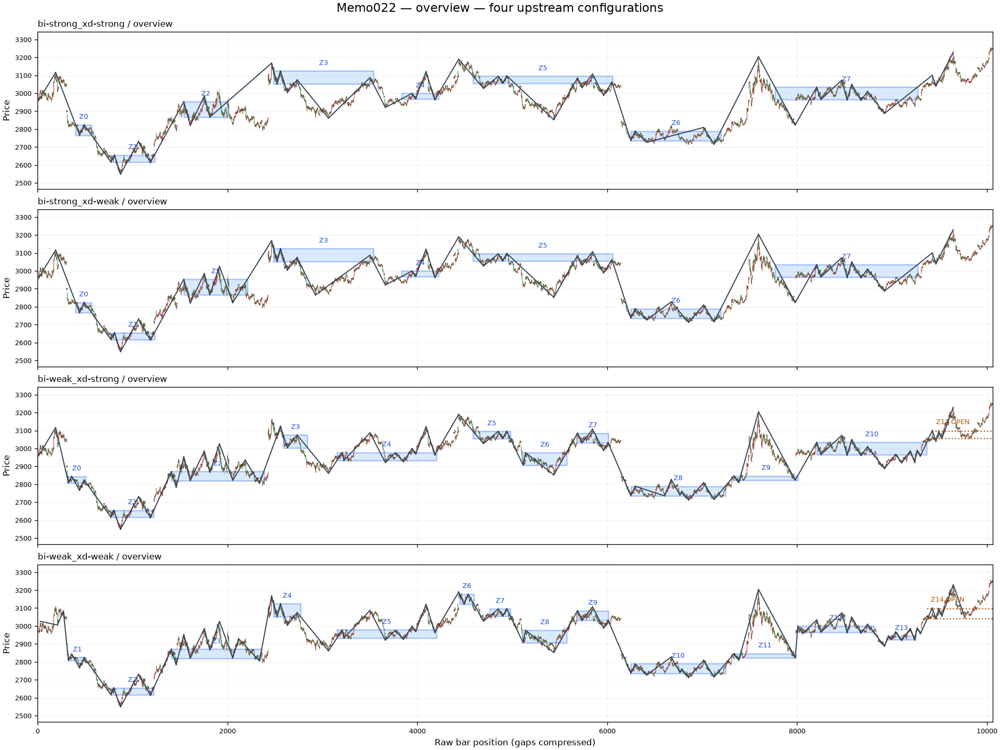

Fixed 031 segment snapshots; actual stroke extrema determine core prices. Straight segment chords locate borders. Missing intersections are reported, never filled in. Open centers have no final right border.

Inspect the missing-left-crossing example
| Mode | Center | Start | Terminal | Confirmation | Core | Geometry |
|---|---|---|---|---|---|---|
| bi-strong_xd-strong | Z0 | 1 | 3 | 4 | 2766.0–2824.0 | located |
| bi-strong_xd-strong | Z1 | 4 | 8 | 9 | 2616.0–2655.0 | located |
| bi-strong_xd-strong | Z2 | 9 | 12 | 13 | 2867.0–2953.0 | located |
| bi-strong_xd-strong | Z3 | 13 | 19 | 20 | 3051.0–3124.0 | located |
| bi-strong_xd-strong | Z4 | 20 | 24 | 25 | 2969.0–2999.0 | located |
| bi-strong_xd-strong | Z5 | 25 | 35 | 36 | 3055.0–3095.0 | located |
| bi-strong_xd-strong | Z6 | 36 | 40 | 41 | 2736.0–2789.0 | located |
| bi-strong_xd-strong | Z7 | 41 | 50 | 51 | 2965.0–3034.0 | located |
| bi-strong_xd-weak | Z0 | 1 | 3 | 4 | 2766.0–2824.0 | located |
| bi-strong_xd-weak | Z1 | 4 | 8 | 9 | 2616.0–2655.0 | located |
| bi-strong_xd-weak | Z2 | 9 | 14 | 15 | 2867.0–2953.0 | located |
| bi-strong_xd-weak | Z3 | 15 | 21 | 22 | 3051.0–3124.0 | located |
| bi-strong_xd-weak | Z4 | 22 | 26 | 27 | 2969.0–2999.0 | located |
| bi-strong_xd-weak | Z5 | 27 | 37 | 38 | 3055.0–3095.0 | located |
| bi-strong_xd-weak | Z6 | 38 | 44 | 45 | 2736.0–2789.0 | located |
| bi-strong_xd-weak | Z7 | 45 | 54 | 55 | 2965.0–3034.0 | located |
| bi-weak_xd-strong | Z0 | 1 | 5 | 6 | 2808.0–2844.0 | located |
| bi-weak_xd-strong | Z1 | 6 | 10 | 11 | 2616.0–2655.0 | located |
| bi-weak_xd-strong | Z2 | 11 | 20 | 21 | 2820.0–2871.0 | located |
| bi-weak_xd-strong | Z3 | 21 | 23 | 24 | 3004.0–3075.0 | located |
| bi-weak_xd-strong | Z4 | 24 | 34 | 35 | 2932.0–2978.0 | located |
| bi-weak_xd-strong | Z5 | 35 | 39 | 40 | 3055.0–3095.0 | located |
| bi-weak_xd-strong | Z6 | 40 | 42 | 43 | 2907.0–2976.0 | located |
| bi-weak_xd-strong | Z7 | 43 | 47 | 48 | 3031.0–3085.0 | located |
| bi-weak_xd-strong | Z8 | 48 | 56 | 57 | 2736.0–2789.0 | located |
| bi-weak_xd-strong | Z9 | 57 | 60 | 61 | 2823.0–2847.0 | located |
| bi-weak_xd-strong | Z10 | 61 | 74 | 75 | 2965.0–3034.0 | located |
| bi-weak_xd-strong | Z11 | 75 | None | None | 3055.0–3097.0 | open |
| bi-weak_xd-weak | Z0 | 0 | 2 | 3 | 3005.0–3083.0 | left_crossing_missing |
| bi-weak_xd-weak | Z1 | 3 | 6 | 7 | 2808.0–2824.0 | located |
| bi-weak_xd-weak | Z2 | 7 | 11 | 12 | 2616.0–2655.0 | located |
| bi-weak_xd-weak | Z3 | 12 | 21 | 22 | 2820.0–2871.0 | located |
| bi-weak_xd-weak | Z4 | 22 | 26 | 27 | 3051.0–3124.0 | located |
| bi-weak_xd-weak | Z5 | 27 | 37 | 38 | 2932.0–2978.0 | located |
| bi-weak_xd-weak | Z6 | 38 | 40 | 41 | 3121.0–3178.0 | located |
| bi-weak_xd-weak | Z7 | 41 | 44 | 45 | 3055.0–3095.0 | located |
| bi-weak_xd-weak | Z8 | 45 | 47 | 48 | 2907.0–2976.0 | located |
| bi-weak_xd-weak | Z9 | 48 | 52 | 53 | 3031.0–3085.0 | located |
| bi-weak_xd-weak | Z10 | 53 | 61 | 62 | 2736.0–2789.0 | located |
| bi-weak_xd-weak | Z11 | 62 | 65 | 66 | 2823.0–2847.0 | located |
| bi-weak_xd-weak | Z12 | 66 | 74 | 75 | 2965.0–3000.0 | located |
| bi-weak_xd-weak | Z13 | 75 | 81 | 82 | 2924.0–2944.0 | located |
| bi-weak_xd-weak | Z14 | 83 | None | None | 3039.0–3097.0 | open |